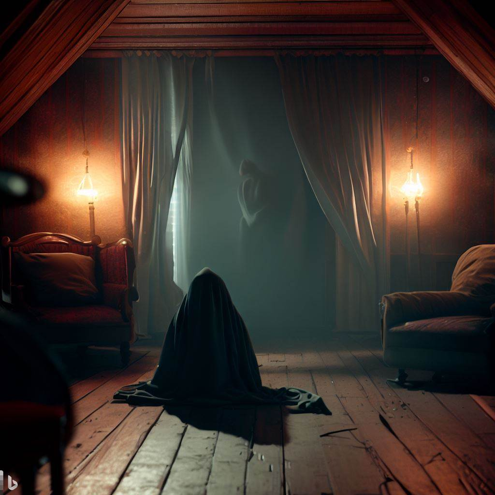

<!DOCTYPE html>
<html lang="pt-br">
<head>
<meta charset="UTF-8">
<meta http-equiv="X-UA-Compatible" content="IE=edge">
<meta name="viewport" content="width=device-width, initial-scale=1.0">
<link rel="stylesheet" href="style.css">

  
</head>
<body>
    
</body>
</html>


<p>Filmes de terror mais assistidos </p>

<p>Confira os filmes de terror mais assistidos</p>

<ul>
  <li>O EXORCISTA</li>
  <li>CORRA!</li>
  <li>HOST</li>
</ul>

<p><strong>O exorcista</strong> O Exorcista, é um filme de terror americano de 1973 dirigido por William Friedkin e escrito por William Peter Blatty. O filme é estrelado por Ellen Burstyn, Max von Sydow, Lee J. Cobb, Kitty Winn, Jack MacGowran, Jason Miller e Linda Blair. A história segue a jovem Regan MacNeil (Linda Blair), que começa a exibir comportamento estranho e violento após brincar com um tabuleiro ouija. Sua mãe, Chris (Ellen Burstyn), busca ajuda médica e eventualmente recorre a um padre exorcista, o padre Merrin (Max von Sydow), depois que Regan é possuída por um demônio. O filme foi um grande sucesso comercial e de crítica, e é considerado um dos melhores filmes de terror já feitos.
Para saber mais detalhes sobre o filme o exorcista, você pode clicar em "exorcista" negritado em azul</a>
<a href="https://www.primevideo.com/">
 Exorcista </a>


</p>
<p><strong>Corra!</strong> Corra, é um filme de suspense e terror psicológico do norte-americano Jordan Peele, tratando-se do primeiro longa-metragem que ele dirigiu. Com Daniel Kaluuya e Allison Williams no elenco principal, a obra fala sobre um jovem apaixonado que vai viajar para conhecer a família da namorada. Depois do lançamento em 2017, o longa se tornou um enorme sucesso internacional, tendo sido um dos filmes mais comentados e aclamados dos últimos anos. O filme narra a história de um jovem negro chamado Chris que vai visitar a família de sua namorada pela primeira vez. A princípio, tudo parece normal, mas logo ele percebe que há algo estranho naquela casa. O filme aborda temas como racismo, hipnose e manipulação mental. </p>
<p><strong>Host</strong> O filme Host é um filme de terror sobrenatural britânico de 2020 dirigido por Rob Savage. O filme se passa em uma videochamada no Zoom e é apresentado como um filme de tela de computador. O elenco inclui Haley Bishop, Jemma Moore, Emma Louise Webb, Radina Drandova e Caroline Ward. O enredo do filme segue um grupo de amigos que tentam escapar de uma força sobrenatural mortal inadvertidamente gerada durante uma sessão espírita. O filme foi filmado durante a pandemia COVID-19 e foi lançado exclusivamente através do Shudder em 30 de julho de 2020¹.
</p>
    
festo</a>
<a href="">Mozilla Manifesto</a>
<a href="https://www.mozilla.org/pt-BR/about/manifesto/"
  >Mozilla Manifesto</a
